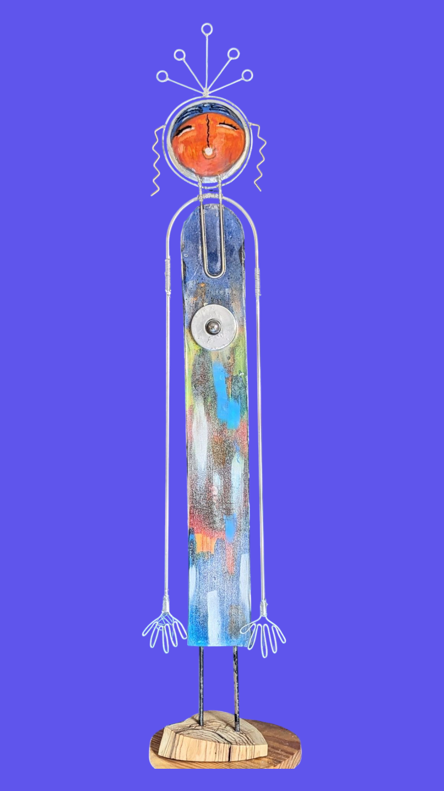
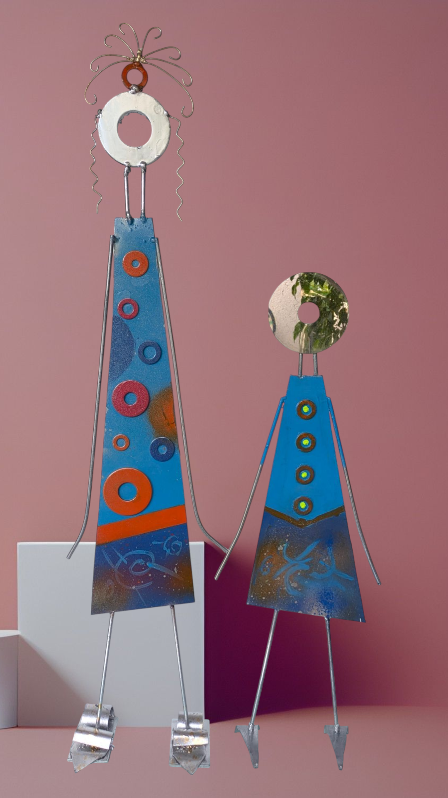

Figura Cuatro · 2025
Serie Figuras
2025
Sobre la pieza
Colador reciclado · alambres · madera de pino · epoxi. El cuerpo humano emerge de lo que otros descartaron. La técnica no se oculta: es parte del lenguaje.
← Anterior
Figura Tres
Siguiente →
Figura Cinco
